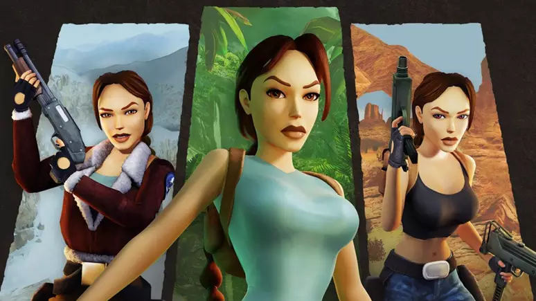
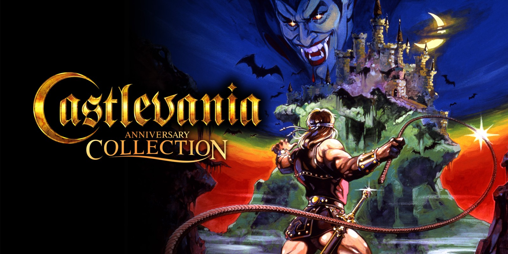
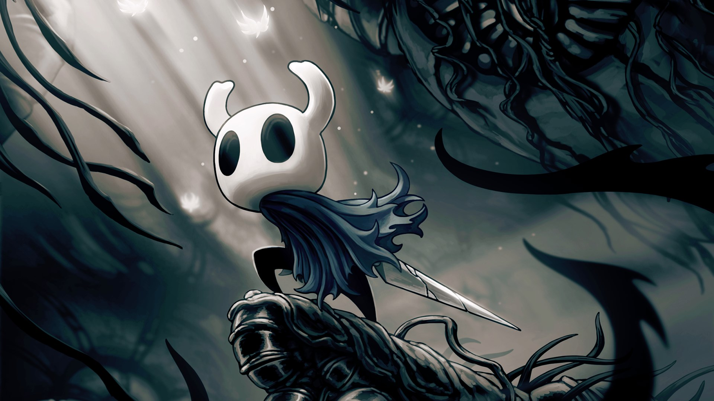
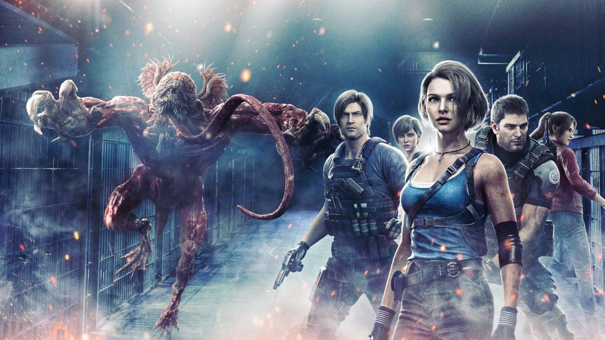

Aventura
Tomb Raider
Tomb Raider é uma franquia de jogos de aventura que segue as incríveis jornadas da arqueóloga britânica Lara Croft. Desde o seu lançamento inicial em 1996 pela Core Design, a série tem sido aclamada por sua jogabilidade inovadora, gráficos impressionantes e narrativas envolventes. Com uma mistura de exploração, quebra-cabeças desafiadores e combate intenso, os jogos da série transportam os jogadores para locais exóticos ao redor do mundo, onde enfrentam perigos variados, desde armadilhas antigas até inimigos implacáveis. Lara Croft, com sua personalidade forte e determinada, tornou-se um ícone dos videogames, inspirando gerações de jogadores e estabelecendo-se como uma das heroínas mais icônicas da cultura pop. A franquia Tomb Raider continua a evoluir, trazendo novas experiências e aventuras emocionantes para os fãs, enquanto mantém o legado de excelência estabelecido ao longo dos anos.
Castlevania
Castlevania é uma série de jogos de vídeo produzida pela Konami. O enredo geralmente gira em torno da luta entre o clã Belmont, uma família de caçadores de vampiros, e o próprio Drácula. Ambientado em um mundo gótico repleto de castelos sombrios, catacumbas e criaturas sobrenaturais, os jogos da série são conhecidos por sua atmosfera macabra, jogabilidade desafiadora e trilha sonora memorável. Desde seu primeiro lançamento em 1986, Castlevania tem sido uma influência significativa no gênero de jogos de plataforma e ação, deixando um legado duradouro na indústria dos videogames. Ao longo dos anos, a série expandiu-se para várias plataformas e gerações de consoles, acumulando uma base de fãs dedicada e inspirando adaptações em outras mídias, como séries animadas e histórias em quadrinhos.
Hollow Knight
Hollow Knight é um aclamado jogo de ação e aventura desenvolvido pelo Team Cherry. Ambientado em um mundo vasto e misterioso chamado Hallownest, o jogo oferece uma experiência de exploração envolvente, com uma ênfase na descoberta de segredos e na superação de desafios. Os jogadores assumem o papel de um personagem silencioso, conhecido como "The Knight", que desce nas profundezas de Hallownest para desvendar sua história e enfrentar ameaças sombrias que assolam a terra. Com sua bela arte em estilo de desenho animado, trilha sonora atmosférica e jogabilidade desafiadora, Hollow Knight cativa os jogadores com sua atmosfera única e profundidade de conteúdo. A jornada do Cavaleiro pelos recantos sombrios e surpreendentes de Hallownest é uma experiência cativante que conquistou tanto críticos quanto jogadores, estabelecendo o jogo como um dos principais expoentes do gênero Metroidvania.
Resident Evil
Resident Evil é uma renomada série de jogos de survival horror criada pela Capcom. Desde o seu lançamento inicial em 1996, a franquia tem sido aclamada por sua atmosfera tensa, narrativa envolvente e jogabilidade envolvente. Ambientada em cenários sombrios e assustadores, como mansões abandonadas, laboratórios secretos e cidades infestadas de zumbis, os jogos desafiam os jogadores a enfrentarem horrores indescritíveis enquanto lutam pela sobrevivência contra criaturas mutantes e ameaças biológicas terríveis. Ao longo dos anos, Resident Evil evoluiu, apresentando novos elementos de jogabilidade, gráficos avançados e uma narrativa em constante expansão que explorou os mistérios por trás do surto do T-Virus e as conspirações sinistras da Umbrella Corporation. A série inspirou adaptações em filmes, livros e outras mídias, solidificando seu lugar como um dos pilares do gênero de horror nos videogames.